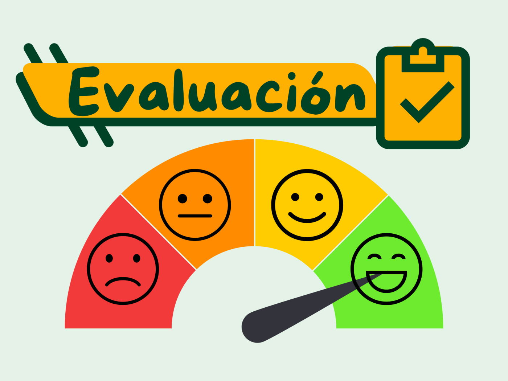
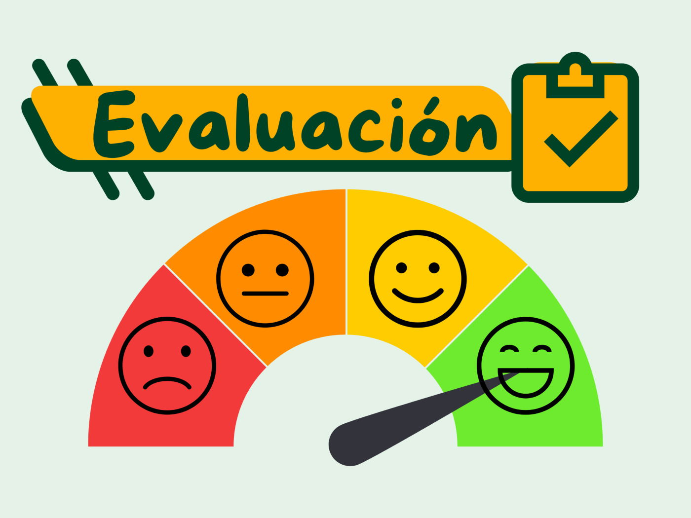

MÓDULO FINAL: Evaluación integradora y cierre
Objetivo del módulo
Evaluar los conocimientos adquiridos a lo largo de los tres módulos y reflexionar sobre la importancia de la seguridad digital.

Objetivo del módulo
Evaluar los conocimientos adquiridos a lo largo de los tres módulos y reflexionar sobre la importancia de la seguridad digital.

Descripción:
Realiza un diagnóstico sobre tu propio nivel de seguridad digital o el de tu entorno (familia, compañeros o centro educativo).
Esta actividad te permitirá aplicar los conocimientos de los tres módulos:
Qué es la seguridad informática.
Qué amenazas existen.
Qué medidas prácticas puedes aplicar.
Instrucciones:
Haz una pequeña investigación o encuesta (puedes preguntar a 3 o 4 personas) sobre hábitos de seguridad digital.
Ejemplo de preguntas:
¿Usas contraseñas diferentes para cada cuenta?
¿Tienes instalado un antivirus actualizado?
¿Sabes qué es el phishing?
¿Haces copias de seguridad de tus archivos?
Con los resultados, elabora un breve informe que incluya:
Resumen de las respuestas.
Principales riesgos detectados.
Recomendaciones personales o grupales para mejorar.
Incluye una conclusión final sobre la importancia de aplicar buenas prácticas de seguridad.
Envía tu trabajo final al correo del profesor(edelberto11507@gmail.com), coloca tu nombre y apellido.
| Excelente (5 pts) | Bueno (3 pts) | Necesita mejorar (1 pt) | |
|---|---|---|---|
| Aplicación del conocimiento | Aplica correctamente los conceptos de los tres módulos. (5) | Aplica parcialmente los conceptos. (3) | Se limita a repetir teoría sin análisis. (1) |
| Análisis de resultados | Identifica riesgos y propone buenas recomendaciones. (5) | Menciona algunos riesgos sin análisis. (3) | No explica resultados ni propone mejoras. (1) |
| Presentación | El informe o presentación es clara y ordenada. (5) | Presenta información básica con poco orden. (3) | Desordenado o difícil de entender. (1) |
| Reflexión final | Expresa una reflexión personal sobre lo aprendido. (5) | Reflexión general o poco profunda. (3) | Sin reflexión final. (1) |
Obra publicada con Licencia Creative Commons Reconocimiento Compartir igual 4.0